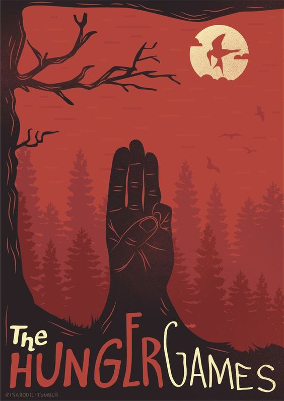

Peliculas
The Hunger Games

Los juegos del hambre (título original en inglés: The Hunger Games) es el primer libro de la trilogía homónima escrita por la autora estadounidense Suzanne Collins. La editorial Scholastic Press lo publicó el 14 de septiembre de 2008. Se trata de una novela de aventura y ciencia ficción narrada en primera persona desde la perspectiva de Katniss Everdeen, una adolescente de dieciséis años que vive en Panem, una nación postapocalíptica ubicada en lo que anteriormente era América del Norte. El libro muestra en mayor parte las experiencias vividas por ella en «Los Juegos del Hambre», un evento anual realizado en Panem donde un chico y una chica de cada distrito con edades comprendidas entre los doce y los dieciocho años deberán luchar a muerte entre ellos mientras son observados por televisión nacional.
Inspirado en las experiencias de su escritora y algunos relatos de la mitología griega, Los juegos del hambre trata temas como la pobreza extrema y el hambre. Varios críticos dieron reseñas positivas del libro, aunque varios notaron similitudes con Battle Royale de Koushun Takami. Luego de haberse distribuido alrededor del mundo, vendió más de veinte millones de copias, lo que lo convierte en uno de los libros más vendidos de todos los tiempos. Además, también se lanzó un audiolibro narrado por la actriz Carolyn McCormick.
En marzo de 2009, Lionsgate Entertainment adquirió los derechos de autor del libro y comenzó a crear su adaptación fílmica, la que luego se publicaría el 23 de marzo de 2012 con Jennifer Lawrence en el papel de Katniss, Josh Hutcherson como Peeta y Woody Harrelson como Haymitch. Otros actores incluyen a Liam Hemsworth como Gale y Alexander Ludwig como Cato. La película se convirtió en un éxito en taquilla mundialmente, llegando a recaudar $691 247 768 y también a incrementar las ventas del libro.